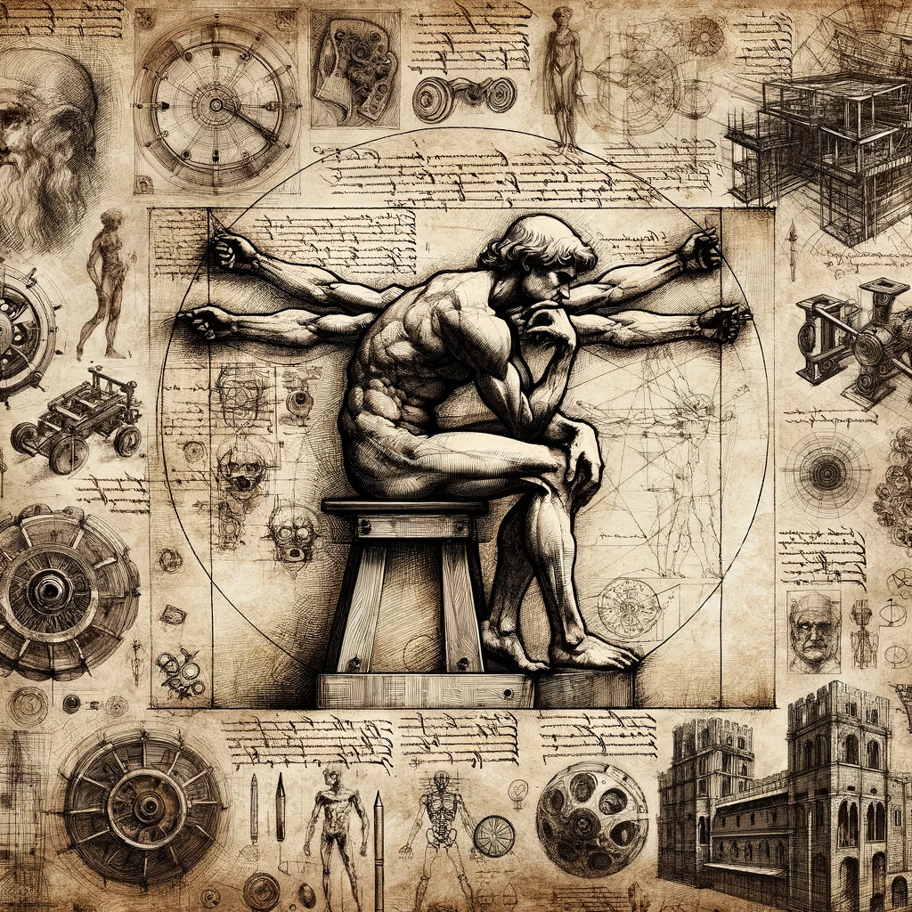

Leonardo da Vinci, a polymath of the Renaissance era, was not only an artist but also an inventor, scientist, and visionary thinker. His notebooks, filled with sketches, scientific diagrams, and musings, offer a window into his extraordinary mind. This website aims to explore the breadth of da Vinci's genius, spanning his artistic masterpieces, innovative inventions, and groundbreaking anatomical studies.
Da Vinci's contributions to the art world are unparalleled. His techniques in sfumato, chiaroscuro, and perspective were revolutionary. Works like the Mona Lisa and The Last Supper continue to inspire and mystify artists and art lovers worldwide.
Leonardo's sketches and blueprints reveal a mind that transcended his time. His ideas for flying machines, armored vehicles, and even early concepts of a robot reflect an inventive spirit driven by boundless curiosity.
Da Vinci's fascination with the human body led him to conduct detailed anatomical studies. His sketches, based on dissections, were far ahead of his time, contributing to the fields of anatomy and physiology.
Leonardo da Vinci's legacy is a testament to the power of curiosity and interdisciplinary exploration. His work continues to inspire and influence a wide range of fields, from art to science, reminding us of the interconnectedness of all disciplines.